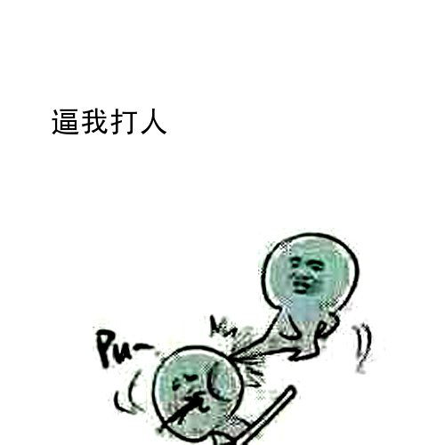

正文: 以前回村子里摘荔枝，踩在梯子上，然后熊孩子过来摇。
哎嘿？！
当时我就不乐意了，旁边就是池塘好吗？！
当场下来追着他抓住，拖回去绑树上，等我摘完了才松绑。
熊孩子跑回家跟她妈告状，我说“是你家熊孩子在旁边玩水，我担心他掉下去才绑他在树上的，我又要摘荔枝没空看他。”
然后熊孩子一直说“不是这样的”我就说“那你说我好端端的干嘛绑你啊”熊孩子又不敢说实话。
后来，他因为我说他玩水，被他妈拖回家一顿打。
后面还有几件事，晚点更233333
-------------这是分割线-------------------
好的，我来更了。
第二件事是这样的，那天阳光明媚，我心情很好，于是邀请了一堆小伙伴来家里玩。
大概就是那种有一大块塑料草皮，上面有模型屋子，有各种动物，还有好多娃娃。
正常的玩耍过后我们正常的收拾……
突然！我发现……我怎么有几个娃娃不见了？！！
惨无人道啊！
于是乎我瞬间就明白了！
一定是刚刚那些小伙伴拿走的！
所以我就带上了刚刚装玩具的小箱子，去到了那个我最怀疑的小伙伴家门口。
将玩具一字排开，吸引了好多大人啊！然后开始数，一个，两个，三个……
最后我哭着跟那小伙伴的家长说“把他拿走的娃娃还我好不好，我不能没有那个娃娃啊”
不明真相的围观群众开始议论起来。
大概10分钟后，伴随着屋内的鬼哭狼嚎，小伙伴哭着走出来，把拿走我的几个玩具还我了。
从此再也没有小伙伴拿过我东西！
----------我们普通的来个分割线---------
这件事是这样的，一天我正在回家的途中
路边有一个小孩在玩沙子，我从旁边走过，他把沙子一扬！
啥也没说，抓起这孩子的小铁锹往他帽子里灌了一帽子的沙子。迅速把他脑子那两根带子狠狠地打个个结。
然后我看他在原地抖抖抖沙子，我说“我给你解开吧”
解开后以迅雷不及掩耳之势将帽子一扣！
奔跑吧！牛宝宝！
(是这样的，那个小孩子我是见过几次的，我们都相互不认识，但是经常看见他在欺负别的小朋友，都是往别人身上扔沙子这样的。那天走过去他见准时机往我身上扔沙子……又正好在生理期……所以额……额……嗯！生理期的女生不要惹！生理期的女生不要惹！生理期的女生不要惹！重要的事情说三遍！)
---------------此处为分割线--------------------
回复不来了，在这里统一回复一下。
其实我作为一个小白，能得到那么多的回复，和赞\(≧▽≦)/真是太开心了！感谢知友们的每一句话和每一个赞！
~\(≧▽≦)/~阿里嘎多
----------------万恶皆为分割线----------------
为什么总说我单身狗！！！我是妹子！！！有男票！！QAQ
----------------此处又是分割线----------------
最近get到一个新技能，给熊孩子吃香蕉。然后给他倒雪碧...
倒一点酸奶在地上，放几张or几本限制级杂志，电脑桌上也可以倒一点
（PS：只限男生，后果是以后别人会对你改观）
奥利奥扭开，中间挖掉一点夹心，挤芥末（别的地方看来的，具体出处不明）
打印假小票，放在贵重物品旁，目的是让熊孩子家长不敢让孩子碰。如果被弄坏了，就把凭据拿出来，然后你考虑让不让他们赔钱。（如果你的东西够贵，可以直接放原来的）
大概就酱惹~
-----------------此处为分割线----------------------
看到评论区很多人在问香蕉雪碧什么梗…
答主会说，
会吐哦●ｖ●
呐！我已经买节操了！！我是一个有节操的人！！
香蕉加雪碧！会产生大量气泡，会吐！好了！不要再问了！实在不行！你们Google百度好不啦？！